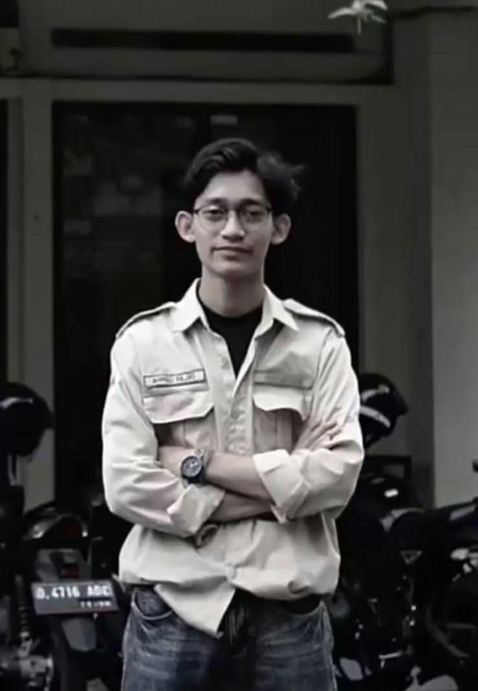
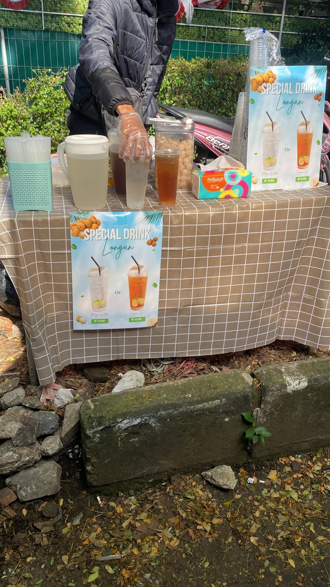
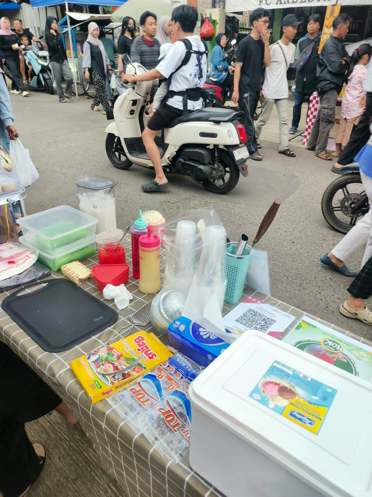
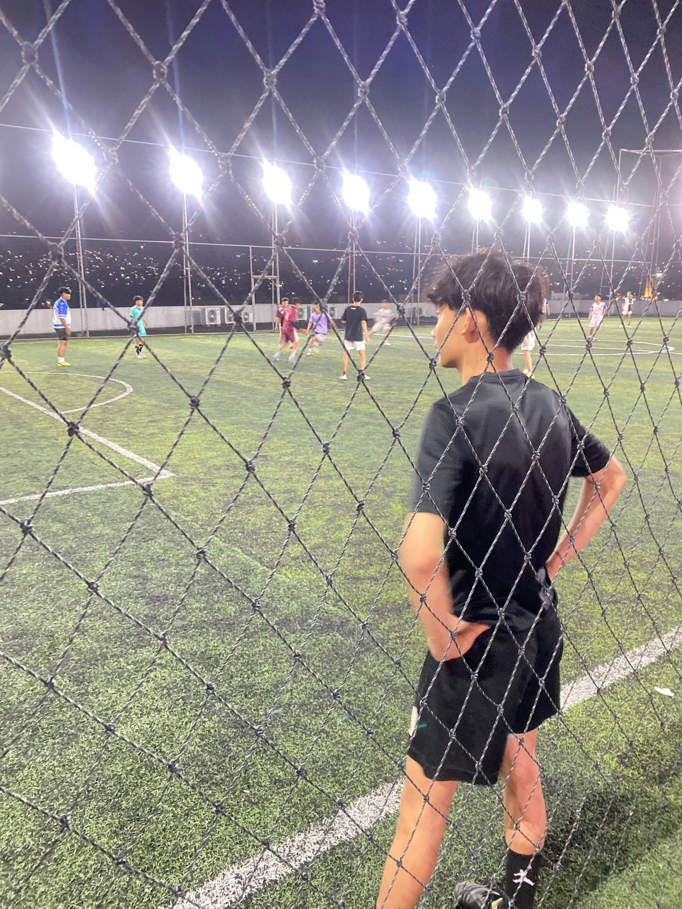
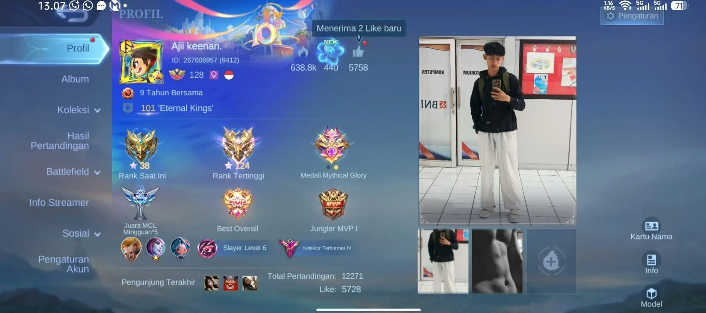
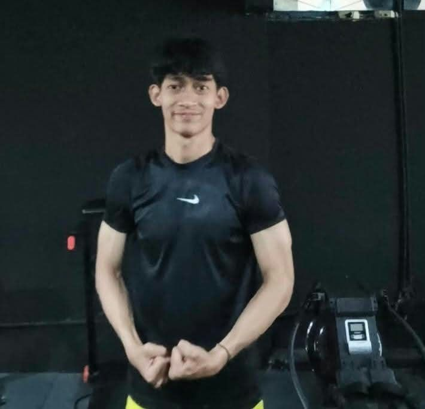
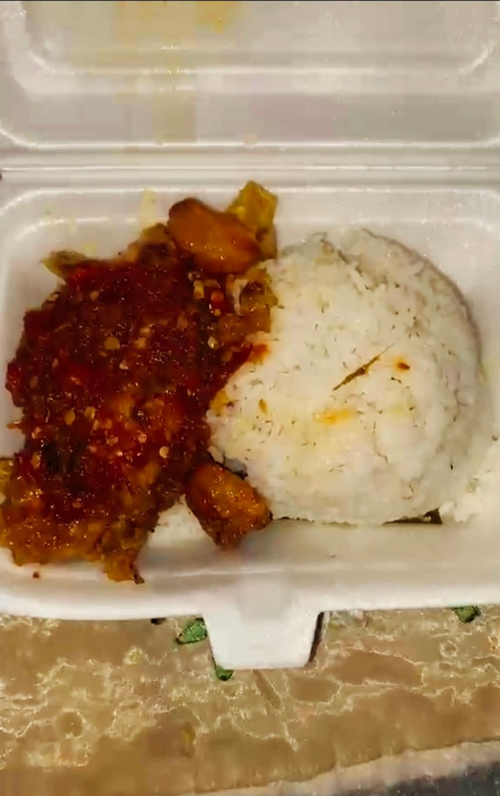
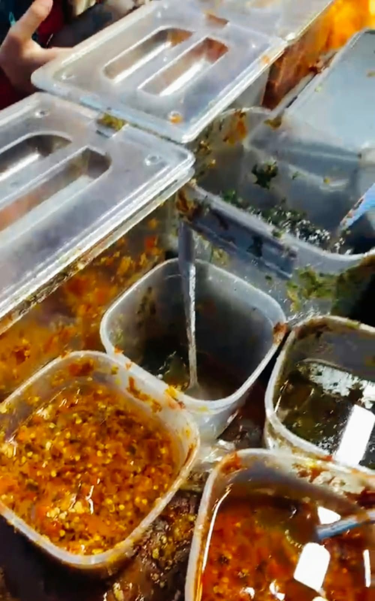
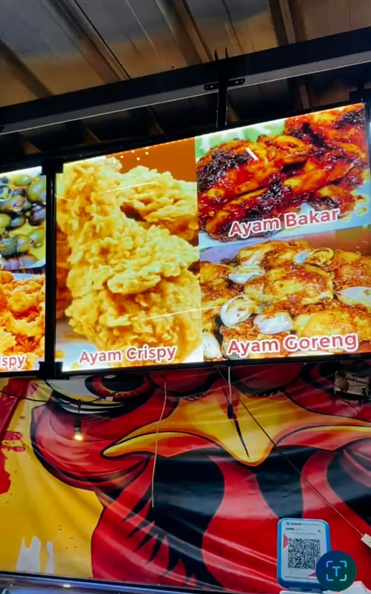

Menciptakan website yang fungsional, antarmuka visual yang berkarakter, serta menyampaikan gagasan di depan publik secara komunikatif dan berdampak.
Halo! Saya Ahmad Fajri. Saya memadukan ketajaman logika pemrograman dalam Web Development, kepekaan estetika tata letak sebagai Web Designer, serta wawasan strategi dan inovasi dalam dunia Culinary Entrepreneurship. Bagi saya, sebuah produk maupun bisnis yang hebat tidak hanya harus berjalan mulus dan terlihat memukau, tetapi juga harus mampu memberikan nilai nyata dan pengalaman terbaik bagi audiens.

Membangun website responsif, cepat, dan terstruktur dengan HTML5, CSS3, JavaScript, serta arsitektur kode yang bersih dan mudah dikembangkan.
Sistem webuntuk mengelola pemesanan layanan laser cutting, menampilkan katalog produk, dan memproses pembayaran secara online.
Merancang antarmuka visual (UI/UX) yang estetis, pemilihan tipografi editorial yang kuat, serta pengalaman pengguna yang intuitif di semua perangkat.
Mengembangkan ide usaha kuliner, manajemen operasional F&B, penyusunan strategi pemasaran produk makanan, serta analisis kepuasan pelanggan.
dokumentasi foto bisnis saya

01. foto bisnis es leci
02. foto bisnis es cream pisang ijoKombinasi sepak bola, gaming, dan rutin nge-gym melatih stamina fisik, refleks taktis, serta disiplin mental saya sehari-hari.



Bagian ini memuat seluruh dokumen sertifikasi resmi, pelatihan, lisensi kompetensi, serta piagam penghargaan yang telah saya raih di berbagai bidang.
“Dokumen resmi bukti pencapaian pelatihan, lisensi, dan sertifikasi keahlian yang telah divalidasi.”
“Dokumen resmi bukti keikutsertaan program, apresiasi kegiatan, dan piagam penghargaan yang diraih.”
Pada ulasan kuliner F&B ini, saya mengulas langsung Ayam Geprek Pawon Teteh di kawasan Gegerkalong, Bandung. Destinasi kuliner ini terkenal dengan olahan ayam goreng tepung yang crispy dan juicy, porsi melimpah, serta keunikan ciri khas taburan bawang putih goreng yang sangat royal dan gurih. Dipadukan dengan aneka pilihan sambal segar seperti sambal daun jeruk, tempat ini menjadi rekomendasi utama bagi para pencinta kuliner pedas.

01. Paket Geprek Komplit
02. Sambal Melimpah
03. Paket Ayam GeprekUlasan produk non-F&B andalan sehari-hari, mulai dari perangkat penunjang Web Development, gaming gear, hingga perlengkapan olahraga sepak bola.